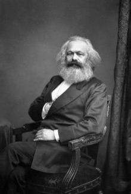

1818-1883 · The 1800s
← The philosophy map · About Marx
Is it fair that some people become rich from other people's work?
A cup of coffee in a café costs a few euros. The farmer who grew the beans may receive only a few cents of that price. Is that simply how business works, or is something unfair going on? In the 1800s, a German thinker living in London built a whole theory around questions like this.
Read one part at a time. After each part, close your eyes and answer the question before you check.
Karl Marx was born in Trier, Germany, in 1818, into a family of lawyers. At university he studied law and philosophy and read Hegel, who said history moves forward through conflict. Marx liked the idea but changed it. History, he said, is not driven mainly by ideas, but by work, money and who owns what. In 1844, in Paris, he met Friedrich Engels, who became his partner for life.
How did Marx change Hegel's idea of history?
In 1848 Marx and Engels wrote The Communist Manifesto. It begins by saying that a 'spectre', or ghost, is haunting Europe, and it claims that all history is the history of class struggle. Soon after, Marx was forced to leave several countries. In 1849 he moved to London, where he lived with his family, often very poor, for the rest of his life. Engels, whose family owned factories, helped them with money.
Who helped Marx and his family with money in London?
Marx spent years writing in the Reading Room of the British Museum. In 1867 he published the first volume of Capital. He argued that factory owners grow rich by paying workers less than the value their work creates. Workers, he said, become alienated: cut off from what they make and from their own lives. He believed workers would one day take control. He died in London in 1883.
According to Marx, how do factory owners grow rich?
Each word is hidden in a sentence. Read it aloud and say what you think the bold word means. Then reveal and compare.
In Marx's terms, which of these people belong to the owning class, and which to the working class? Decide together, then reveal. Then discuss: does Marx's picture still fit today's world?
Now you: explain Marx's idea to a friend who has never heard of him. Speak for about a minute. Use the starters if they help.
You're offered the same job at two companies. Company A pays well above average, but the owner keeps all the profit and makes every decision. Company B is owned by its workers: everyone votes on big decisions and shares the profit, but the pay is lower and the company is less certain to survive.
Tap two cards. Use the timer to keep going, and use at least two of the phrases above.
No looking back. Answer from memory first, then check.
What did Schopenhauer believe drives all of life, and what gives us relief from it?
What is Kant's test for right and wrong?
What did Locke say about natural rights and government?
What did Averroes believe about faith and reason?
From memory, out loud. Then check.
1. What did Marx say drives history?
2. Where did Marx live for most of his adult life, and who helped him?
3. Which two famous books did Marx write?
4. What does 'alienation' mean? Give an example.